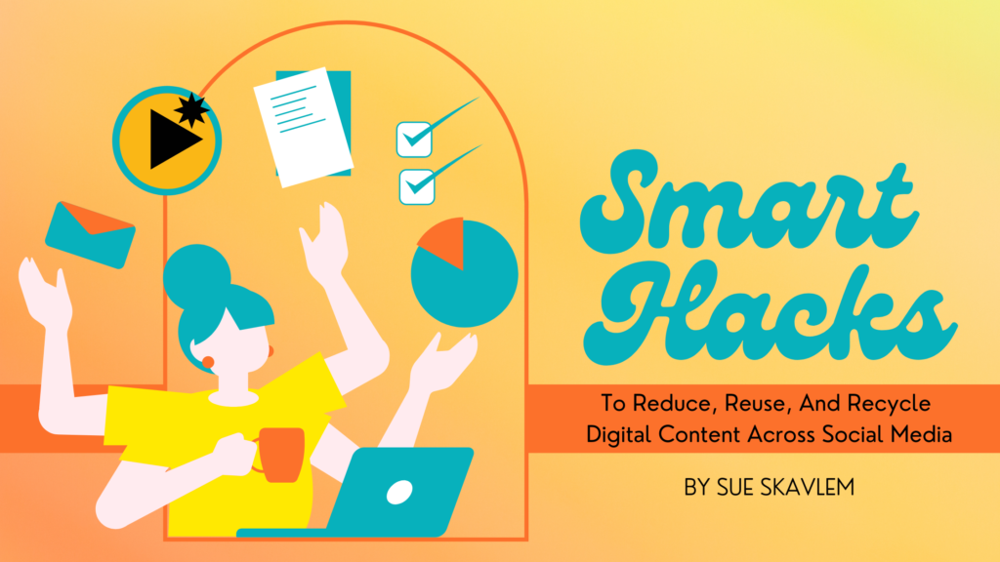

Is there anything more terrifying than creating original content?
Do you ever wonder "What the heck am I going to write for my social media this month?"
Don't panic. Chances are you've already got some GOLD that you can reuse in a new and interesting way.
You have a message. And different people will be looking at your content every day. Some of them are your KEY DEMOGRAPHIC, some of them will be your biggest fans, and some of them will need converting. It's OK to repurpose your message for different times, reframe it for different audiences, and reintroduce the same concepts with different ways of saying the same thing.
First, LOOK at all the different types of content platforms out there:
Traditional: TV, magazines, radio, billboards
Digital: Blogs, forums, websites, social media, and video or audio streaming sites.
Focusing on the digital side, what kind of things live on those content platforms?
Stories, posts, podcasts, songs, discussions, polls, videos, how-tos, behind-the-scenes, illustrations, graphics, photos, screenshots, reviews, & reactions. WHEW. That's a ton of digital content that already exists!
Second, LISTEN to Austin Kleon and "Steal Like an Artist."
That is, if you're sharing someone else's work, credit them. Don't steal a single person's idea (bad). Instead, steal LOTS of people's ideas, mix them all together, and create something NEW (good).
"Every new idea is just a mashup or a remix of one or more previous ideas." – Austin Kleon, Steal Like an Artist
Third, START with a non-blank page or canvas.
It's so easy to fear writing or creating content when you're faced with that pristine blank nothingness.
What can you do to start with something instead of that nothingness?
Starter Hack #1
Set a timer and scroll through your own blogs or other people's posts. Then, for anything that sparks your interest, take notes or copy/paste it into your Google Doc, spreadsheet, or Word doc. You've got a ton of interesting ideas ready to take apart and put back together, like a collage of something new.
Starter Hack #2
Already have an idea?
Record a conversation with a friend about your idea. Have them ask you questions, and talk it out. Now you've got the basic structure for your new blog post (or audio) ready to go!
Starter Hack #3
Do a Google search for "What [Millennials] Need to Solve for [Career Advancement] by [Personal Branding]" (replace the brackets with your target audience, their problem, and your service or product).
What questions are people asking? What is their end goal? What do other experts say? What are your experiences? How does your product or service help solve the problem in a different way?
Hack #4
Create a "reaction video," review, or blog post about someone else's idea, product, or method. Do you have a very expressive face? Perfect. Film that. Here's a great how-to from Clipchamp.
When it comes to content writing: REDUCE, REUSE, RECYCLE
Reduce
You don't have to reinvent the wheel every time you create posts for social media.
The social media golden ratio is 30, 60, 10:
30% owned (original thought)
60% curated
10% promotional
When you create, think: this is less about what I have to say than what I can show, tell, or ask.
Reduce Hack #1
ASK: Create social media polls. Use questions from your blog posts or webinars to create polls on social media platforms.
Reduce Hack #2
SHOW: The process is the product. Share behind-the-scenes photos or videos of the process of creating your digital content.
Reduce Hack #3
TELL: Share testimonials or positive feedback you've received about your digital content on social media. (Psst… this makes easy video content.)
Reuse
Reuse Hack #1
Create social media graphics: Take screenshots of key points from your blog posts or webinars and turn them into shareable graphics.
Reuse Hack #2
Use quotes from your content: Share quotes from your blog posts, webinars, or videos as standalone social media posts.
Reuse Hack #3
Use excerpts from your content: Share a short excerpt from your blog post or webinar as a teaser to encourage people to read or watch the full content.
Reuse Hack #4
Use snippets from your video content: Share short clips from your videos as Instagram Reels, YouTube Shorts, or TikToks.
Recycle
Recycle Hack #1
Repurpose your own blog posts: Take the main points or key takeaways from your blog posts and share them as a series of short posts.
Recycle Hack #2
Create infographics: Take key data or statistics from your blog posts or research and turn them into shareable infographics.
Recycle Hack #3
Create a series: Break your longer brochure, blog, or web info into smaller chunks and share it as a series of social media posts.
Quick Recap
Creating content for the upcoming year doesn't have to be scary when you don't start with a blank page.
- Remember the 30, 60, 10 golden ratio of digital content: 30% owned content, 60% curated (shared or reshared), 10% promotional.
- If you share someone's content, credit or link to them.
- If you steal, steal like an artist (collage multiple influences to make something new).
- Repurpose your message for different audiences, at different times, or using different mediums across different platforms.
- Start with a non-blank page: use screenshots, snippets, and stories to rewrite, review, and react.
- Reduce, reuse, and recycle.
Want help with this?
Learn at your own pace with a short class, or get one-on-one help with your own project.
Need help creating your logo? DesignsThatDo.com is your answer!